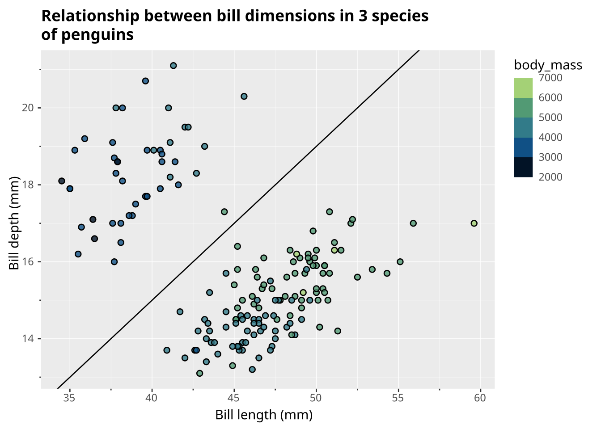

-- Regular query
SELECT * FROM ggsql:penguins
WHERE island = 'Biscoe'
-- Followed by visualization declaration
VISUALISE bill_len AS x, bill_dep AS y, body_mass AS fill
DRAW point
PLACE rule
SETTING slope => 0.4, y => -1
SCALE BINNED fill
LABEL
title => 'Relationship between bill dimensions in 3 species of penguins',
x => 'Bill length (mm)',
y => 'Bill depth (mm)'
 Positron
Positron Quarto
Quarto Jupyter
Jupyter VS Code
VS Code